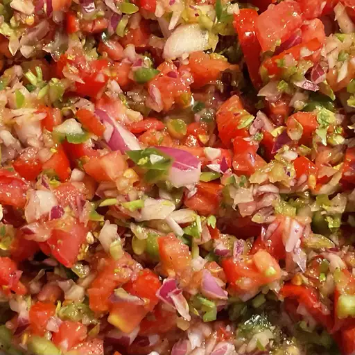

Garden Salsa

Description
This fresh salsa recipe is simple to make from scratch and tastes great. It gets even better if you have time to let the flavors meld. Perfect with your favorite chips at any get-together!
Ingredients
- 3 cups chopped tomatoes
- 1 cup onion, diced
- 1/2 cup chopped green bell pepper
- 1/4 cup minced fresh cilantro
- 2 tablespoons fresh lime juice
- 4 teaspoons chopped fresh jalapeño pepper (including seeds)
- 1/2 teaspoon ground cumin
- 1/2 teaspoon kosher salt, or to taste
- 1/2 teaspoon ground black pepper
Steps
- Use food processor to chop and dice ingredients.
- Stir tomatoes, onion, green bell pepper, cilantro, lime juice, jalapeño pepper, cumin, salt, and pepper together in a bowl until just combined.